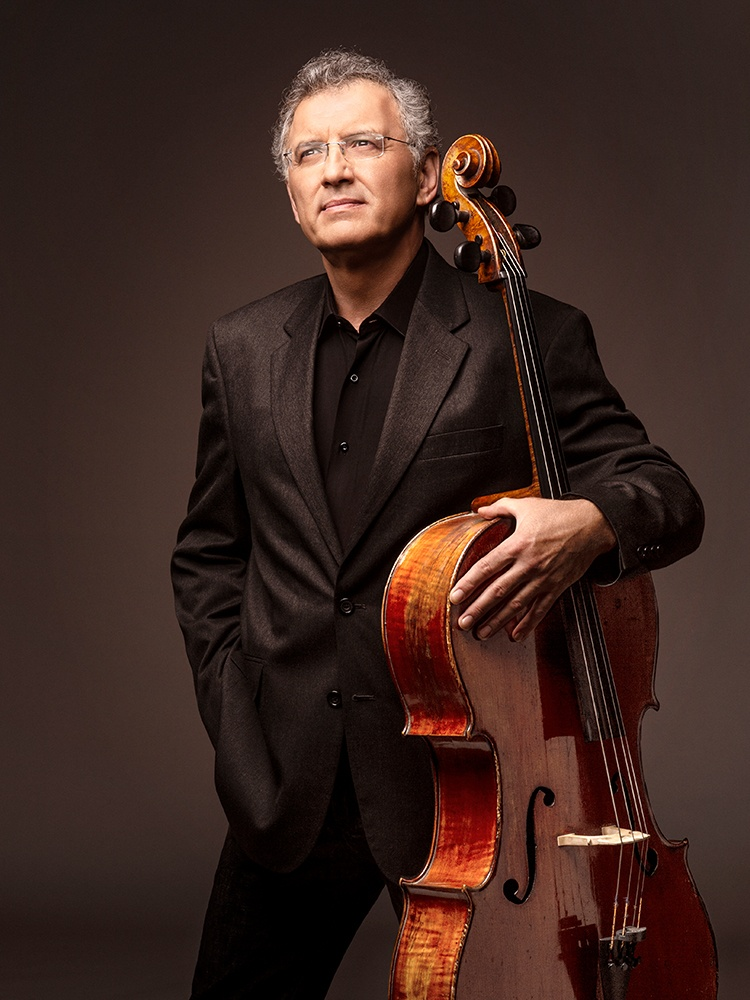

דמיטרי גולדרמן
צ'לו · נגן התזמורת הפילהרמונית הישראלית
דמיטרי גולדרמן נולד ברוסיה ב-1961 ולמד נגינה בצ'לו במשך כעשר שנים במוסקבה. ב-1979 עלה לישראל והמשיך ללמוד אצל פרופ' עוזי ויזל באקדמיה למוזיקה ע"ש רובין באוניברסיטת תל אביב. ב-1986 סיים את לימודיו לתואר שני.
בשנים 1982–85, בעת שירותו הצבאי, ניגן ברביעייה הקאמרית של צה"ל. בשנים 1985–88 היה נגן ראשון עמית בתזמורת הסימפונית ירושלים רשות השידור, ובשנת 1988 התקבל לשורות התזמורת הפילהרמונית הישראלית. הוא מרבה לנגן מוזיקה קאמרית והופיע עם הרכבים קאמריים בארץ ובחו"ל.